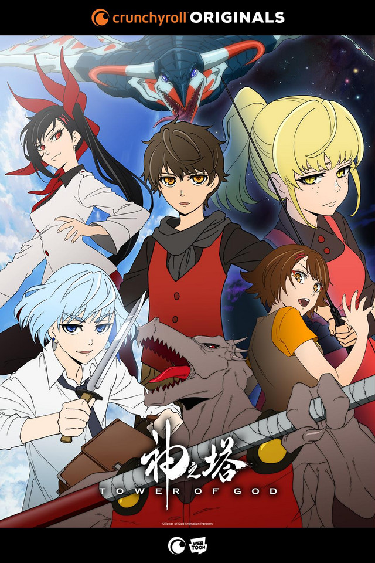
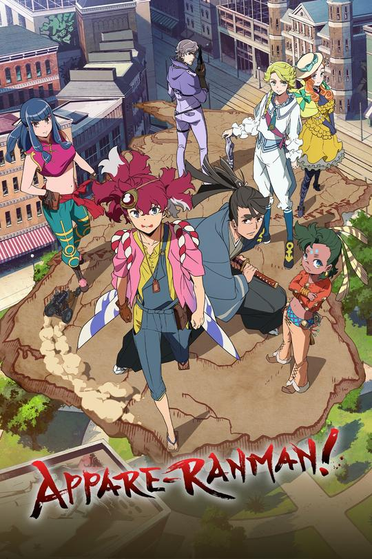

Tower Of God
"Reach the top, and everything will be yours. At the top of the tower exists everything in this world, and al of it can be yours. You can become a god. this is the story of the beginning and the end of Rachel, the girl who clibed the tower so she could see the stars, and Bam, the boy who needed nothing but her." Check out Crunchyroll for more.
Plunderer
"In the world of Alcia, everyone has a number seared onto their body. This "Count" either goes up or down, dependent upon how a person chooses to live. But no one wants to reach 0. Because if you do, you'll be sent to the Abyss!" Check out Hulu for more
Appare-Ranman!
"The socially awkward genius engineer, Appare Sorano, and the wise but cowardly samurai, Kosame Isshiki, enter a trans-American race to win the prize money and get back home. But various dangers await on this race from Los Angeles to New York." Check out Hulu for more
Black Clover Delayed
Word is that due to the Covid-19/Corona virus the studio that was bringing the series will be deleying new episodes of the show starting from May5. This is due to the country of Japan being under state of emergancy since April 16. Hopefully it's a minor delay as the country is looking to open back up May 7 so far. check out Crunchyroll for more.